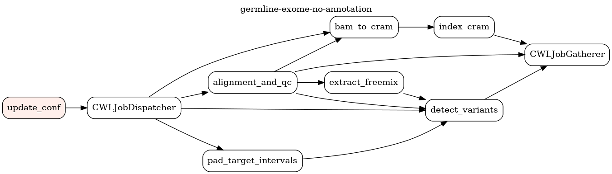

DAGs¶
germline-exome-no-annotation¶
Input parameters¶
sample_input.json
{
"fastq1_path": "cwl_inputs_folder/germline-exome-no-annotation/RG-corriell_S7_L001_R1_001.fastq.gz",
"fastq2_path": "cwl_inputs_folder/germline-exome-no-annotation/RG-corriell_S7_L001_R2_001.fastq.gz",
"run_id": "run_1",
"sample_id": "corriell_S7",
"template_path": "dags/cwl/configurations/templates/germline_exome_configuration_template.yaml"
}
Sample REST API call¶
Sample Airflow cli invocation¶
airflow dags trigger \
-c "$(cat sample_input.json)" \
-r dag_run-1 germline-exome-no-annotation